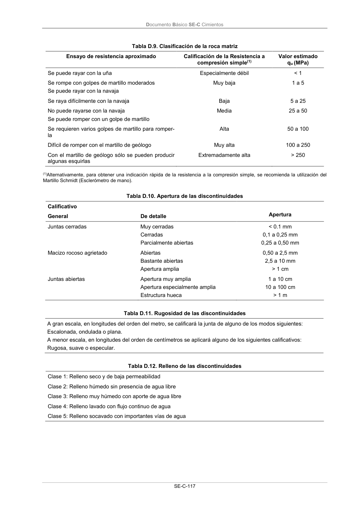

DB-SE-C Cimientos · edición 2019-12-20 · capa oficial
Documento DB-SE-C-oficial · SHA-256 del PDF a71133f4b0dca253e45ea3071c70f2a512354bcc5cd841bf89b1a502f567ac5e
Página física 122 de 165.
Copia fiel del PDF fuente · Fuente oficial
Ficha de la disposición en la fuente oficial
Formato: Texto de la página (Markdown)
Documento Básico SE-C Cimientos SE-C-117 Tabla D.9. Clasificación de la roca matriz Ensayo de resistencia aproximado Calificación de la Resistencia a compresión simple(1) Valor estimado qu (MPa) Se puede rayar con la uña Especialmente débil < 1 Se rompe con golpes de martillo moderados Se puede rayar con la navaja Muy baja 1 a 5 Se raya difícilmente con la navaja Baja 5 a 25 No puede rayarse con la navaja Se puede romper con un golpe de martillo Media 25 a 50 Se requieren varios golpes de martillo para romper- la Alta 50 a 100 Difícil de romper con el martillo de geólogo Muy alta 100 a 250 Con el martillo de geólogo sólo se pueden producir algunas esquirlas Extremadamente alta > 250 (1)Alternativamente, para obtener una indicación rápida de la resistencia a la compresión simple, se recomienda la utilización del Martillo Schmidt (Esclerómetro de mano). Tabla D.10. Apertura de las discontinuidades Calificativo Apertura General De detalle Juntas cerradas Muy cerradas Cerradas Parcialmente abiertas < 0.1 mm 0,1 a 0,25 mm 0,25 a 0,50 mm Macizo rocoso agrietado Abiertas Bastante abiertas Apertura amplia 0,50 a 2,5 mm 2,5 a 10 mm > 1 cm Juntas abiertas Apertura muy amplia Apertura especialmente amplia Estructura hueca 1 a 10 cm 10 a 100 cm > 1 m Tabla D.11. Rugosidad de las discontinuidades A gran escala, en longitudes del orden del metro, se calificará la junta de alguno de los modos siguientes: Escalonada, ondulada o plana. A menor escala, en longitudes del orden de centímetros se aplicará alguno de los siguientes calificativos: Rugosa, suave o especular. Tabla D.12. Relleno de las discontinuidades Clase 1: Relleno seco y de baja permeabilidad Clase 2: Relleno húmedo sin presencia de agua libre Clase 3: Relleno muy húmedo con aporte de agua libre Clase 4: Relleno lavado con flujo continuo de agua Clase 5: Relleno socavado con importantes vías de agua
